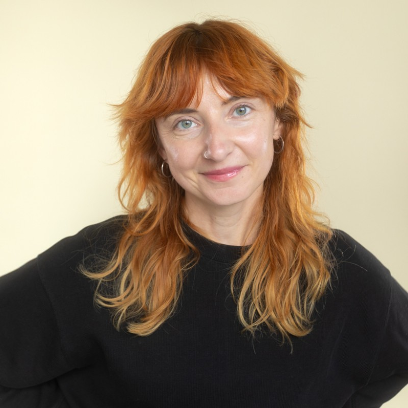

Portfolio
How I connect Claude to our HR tools through MCP to analyse data, automate the routine work and improve the employee experience, so nothing falls through the cracks.

Scheduled tasks
Each one replaces a manual check or report. Open a card to see the problem, the solution and the impact.
Onboarding and offboarding
Why: everyone involved works in one system, Leapsome, with no other tool needed. I launched it in my first 3 months, and 20 people have been onboarded with it so far.
Internal communication
I write in smart brevity, so people get the information they need and never skip my messages.
One line on why the message exists.
What changes for the reader, so they keep reading.
Where the full information lives.
What the reader must do. If nothing, "none".
What's next
Three tools to build connection and belonging in a fully remote team. I build them with design thinking: employees are my users, and every tool starts with their real needs, not my assumptions.